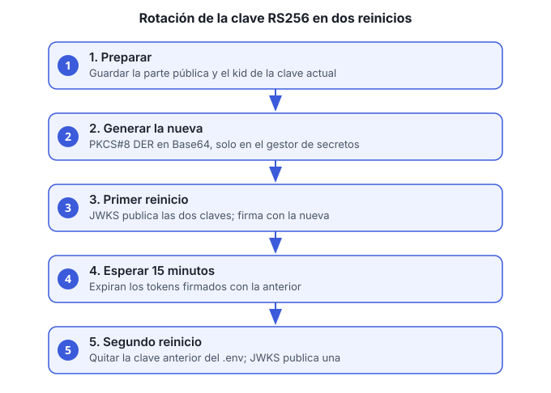

Objetivo: cambiar la clave con la que
usuarios-accesos-ms firma los tokens, sin que los usuarios
pierdan la sesión.
Cuándo: al menos una vez al año, o de inmediato si la clave privada se expone.

Esta guía es el procedimiento completo. La referencia técnica está en la sección «Rotación de la clave RS256» del README del servicio.
Idea general
Los servicios validan el token por su kid (identificador
de la clave). Durante la rotación se publican dos
claves en /.well-known/jwks.json: la nueva firma y la
anterior sigue validando. Cuando expiran los tokens firmados con la
anterior (15 minutos por defecto), se quita. Son dos reinicios de
usuarios-accesos-ms, y ningún otro servicio se
reinicia.
Los refresh tokens son opacos y no cambian con la rotación.
Antes de empezar
- Acceso al gestor de secretos donde está
USUARIOS_JWT_CLAVE_PRIVADA. opensslinstalado.- Una ventana de cambio de al menos 20 minutos (dos reinicios y una espera).
Pasos
Obtén la parte pública de la clave actual y su
kid. Guárdalos; los usarás en el paso 3:echo "$USUARIOS_JWT_CLAVE_PRIVADA" | base64 -d | openssl pkey -inform DER -pubout -outform DER | base64El
kidactual es el valor deUSUARIOS_JWT_KID(por defectoempresa-usuarios-1).Genera la clave nueva en PKCS#8 DER en Base64 y guárdala solo en el gestor de secretos:
openssl genrsa 2048 | openssl pkcs8 -topk8 -nocrypt -outform DER | base64No la pegues en el chat, en un commit ni en un archivo del repositorio.
Actualiza el
.envde la raíz:Variable Valor USUARIOS_JWT_CLAVE_PRIVADALa clave nueva (paso 2) USUARIOS_JWT_KIDUn valor nuevo, por ejemplo empresa-usuarios-2USUARIOS_JWT_CLAVE_PUBLICA_ANTERIORLa parte pública de la clave anterior (paso 1) USUARIOS_JWT_KID_ANTERIOREl kidanteriorPrimer reinicio. Desde aquí el JWKS publica las dos claves y los tokens nuevos se firman con la clave nueva:
docker compose up -d usuarios-accesos-msEspera al menos 15 minutos. Ese es el tiempo de vida de un access token. Durante la espera, los tokens de ambas claves siguen siendo válidos.
Quita la clave anterior del
.env: borraUSUARIOS_JWT_CLAVE_PUBLICA_ANTERIORyUSUARIOS_JWT_KID_ANTERIOR.Segundo reinicio. El JWKS deja de publicar la clave anterior:
docker compose up -d usuarios-accesos-ms
Verificación
Consulta el JWKS desde un contenedor de la red (el gateway no enruta
/.well-known/). Debe listar una sola
clave, con el kid nuevo:
docker compose exec usuarios-accesos-ms curl -s http://localhost:8081/.well-known/jwks.jsonSi la imagen del servicio no trae
curl, consulta la misma URL desde otro contenedor de la redempresa-net:http://usuarios-accesos-ms:8081/.well-known/jwks.json.
Luego inicia sesión y revisa que el accessToken tenga el
kid nuevo en el encabezado (la primera parte del token,
decodificada en Base64, muestra "kid").
Si la clave se expone
No esperes los 15 minutos:
- Genera una clave nueva (paso 2).
- Actualiza
USUARIOS_JWT_CLAVE_PRIVADAyUSUARIOS_JWT_KID, y no pongas la anterior en_ANTERIOR. - Reinicia una vez. Los tokens firmados con la clave expuesta dejan de validarse.
- Cierra las sesiones de los usuarios afectados con
POST /v1/auth/logout-todas, o pide que vuelvan a iniciar sesión.
Problemas comunes
| Síntoma | Causa probable | Qué hacer |
|---|---|---|
| Tokens de 401 justo después del paso 4 | El reinicio no tomó el .env nuevo |
Verifica con docker compose config y reinicia otra
vez |
| El JWKS sigue mostrando dos claves después del paso 7 | No se quitó la variable anterior del .env |
Revisa el .env y reinicia |
| Un servicio no valida un token nuevo | Usa un JWKS en caché | Los servicios recargan el JWKS al recibir un kid
desconocido; si persiste, reinícialo |